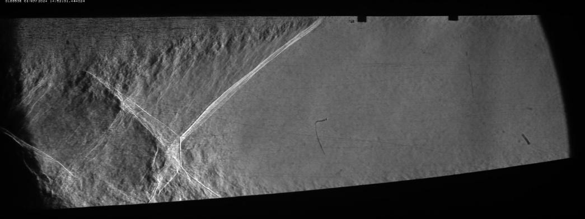
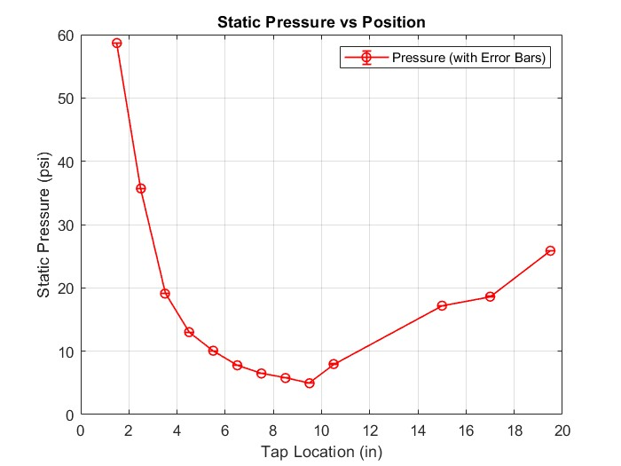
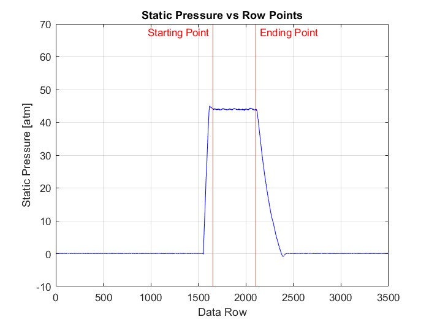

Key Results
- Schlieren images confirmed a clear normal shock between tap positions 9.5 and 10.5 inches in the diverging section — exactly where static pressure data showed an abrupt pressure rise.
- NPR = 3.932 — exceeding the critical NPR, confirming the flow was choked at the throat and a shock existed inside the nozzle.
- Shock strength S = 1.614 — a 61.4% pressure jump across the shock, classifying it as a moderately strong normal shock.
- Mass flow rate = 6.10 lbm/s through the 0.765 in² throat, consistent with the measured stagnation conditions from choked-flow theory.
- The pressure trace showed the textbook normal shock signature: a smooth decrease through the diverging section, a sharp spike at the shock, and recovery to near back pressure downstream.



